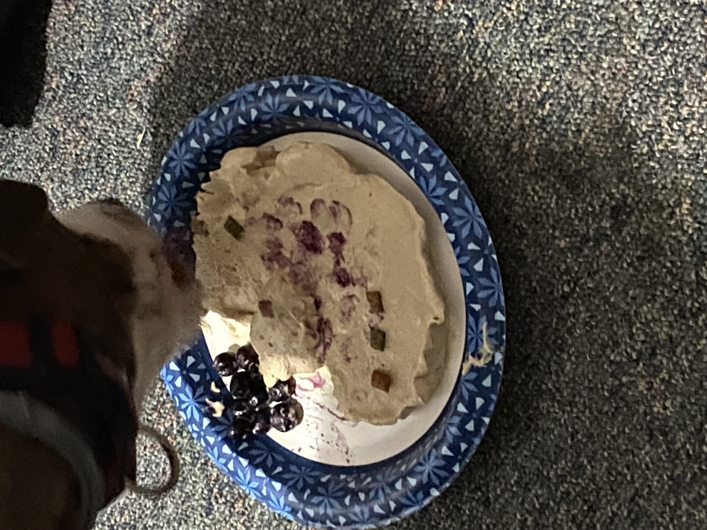

So... More About My Summer...
In late June, I went to Mexico with my family! I visited one of the new 7 world wonders (Chichen Itza) and learned a lot about Mexico’s past and even saw their pyramids! I also enjoyed the authentic Mexican food that I had everyday and the warm beaches that they had to offer. Even though I wasn’t home, I got to celebrate the Fourth of July with my family! When I came back to America, the fun didn’t stop. I came home on the 6th and my Birthday was on the 8th. I celebrated my birthday with a Tres Leches cake and dinner at a restaurant called “The Block”. A little after my birthday some of my family came over to celebrate it with me in my backyard by barbecuing burgers and swimming in the pool. In the middle of July, my aunt from Mexico came to America and we showed her all that New Jersey had to offer. We took her to Asbury and Belmar and even took her to a Rainforest Cafe dinner. When she left it was the start of August. We hit August off with a couple of small 1 day trips. Whether it would be an arcade trip out on IPlayAmerica or a thrill seeking day at Six Flags Great Adventure, or even a long beautiful day at the park, I spent the better part of August enjoying myself! Late Summer I went to Hershey Park and it was wonderful. From the thrill seeking Skyrush roller coaster to the bucket of chocolate chip cookies, I will definitely be visiting again in the future. The last day of Summer break I spent my time at my cousin's house, playing volleyball and eating ice cream. It was a good way to end off Summer break. Throughout the whole Summer I've been focussing on myself, working out 6 times a week and playing basketball daily. I also have been eating healthier on a day to day basis, trying to eat more protein dense foods. While I can’t record every single moment of my summer, here are my highlights of the season!
Here Are Some of The Cool Summer Images From Mexico!

The Pyramids!
If you clap your hands in the right spot, it echos a bird chirp.

Cenote
Cenotes were made by Mayan and other groups of Mexico's past

This is a street cat from Mexico!
My Goals!
I have a couple of goals for this year. To start I am trying to gain 10 lbs by the end of the year. I want to do this so I have more power in basketball and so I can drive easier. Another goal I have for the year is to do well in all my classes. I know everyone else has this goal but I heard this year is important to do good. Another goal I have is to really figure out what I want to do when I’m older. I am still deciding on what I want to do, but this year I really want to narrow it down. Yet another goal I have is to do good on the SAT. I do 20 SAT practice problems everyday. I would also like to try to start a small side project, either like a YouTube channel or maybe even making small websites. Here are some of the goals I have for the 2022 and 2023 year, and hopefully I get them done!
IDK what to put here... This is how I celebrated my dogs Birthday! His name is Lucas.